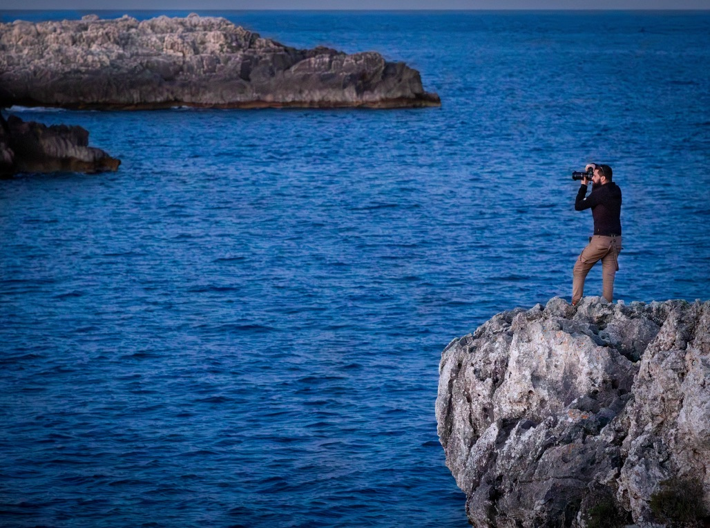

FOTOGRAFIA A MAGLIE E TUTTO IL SALENTO

La Fotografia come Arte...
...La Vita come Ispirazione
La Fotografia come Arte, la Vita come Ispirazione
Benvenuti nel mondo di Physis Studio, dove ogni scatto racconta una storia unica e irripetibile. Specializzato in una vasta gamma di servizi fotografici, il mio obiettivo è quello di immortalare emozioni genuine e momenti preziosi che durano per sempre.
- Ogni foto è un'opera d'arte, frutto di passione e di un occhio attento ai dettagli.
- Con anni di esperienza nel settore, garantisco un servizio impeccabile e risultati straordinari.
- Utilizzo attrezzature all'avanguardia per assicurare immagini di altissima qualità.
- Ogni servizio fotografico è personalizzato per riflettere la vostra unicità e le vostre esigenze.
Passione e Creatività
Esperienza e Professionalità
Tecnologia Avanzata
Personalizzazione
Servizi Offerti

.jpg)


-min.jpg)
La Mia Promessa:
Ogni servizio che offro è guidato dalla mia dedizione per la qualità e dalla mia attenzione ai dettagli. Mi impegno a creare un ambiente rilassato e confortevole durante le sessioni fotografiche, permettendo a chiunque di sentirsi a proprio agio e di esprimere al meglio la propria personalità.
Testimonianze dei Clienti:
Angelica
“Physis Studio ha reso il diciottesimo compleanno di mio figlio un ricordo indelebile con foto e video toccanti e spettacolari che esaltano la bellezza dei luoghi e sottolineano le emozioni del momento.”
Maria e Luca
“Le foto del nostro viaggio nel Salento sono semplicemente magiche. Physis Studio ha catturato ogni emozione con una delicatezza incredibile.”
Federico
“La professionalità e la puntualità di Physis Studio sono state impeccabili. Il servizio si è dimostrato organizzato e attento ai dettagli. Un altro aspetto che mi ha colpito è stata la sua abilità nel mettere a proprio agio i soggetti. La qualità delle foto è stata eccellente.”
Famiglia Congedi
“Il servizio fotografico di famiglia è stato meraviglioso. Physis Studio ha saputo mettere tutti a proprio agio e le foto sono stupende.”
Prenota Ora:
Non perdere l'occasione di rendere eterni i tuoi momenti più belli. Contattami oggi per una consulenza gratuita e scopri come posso trasformare i tuoi ricordi in immagini indimenticabili.

Chi sono
Mi chiamo Matt e sono un fotografo professionista svizzero con una passione innata per catturare l'essenza di ogni momento. Dopo aver sviluppato la mia esperienza nel settore in Svizzera, mi sono trasferito in Salento, portando con me la mia visione unica e la mia dedizione per la fotografia. Da quando ho impugnato la mia prima macchina fotografica, ho capito che la fotografia non è solo un lavoro, ma un modo di raccontare storie, di fermare il tempo e di immortalare emozioni autentiche.
La Mia Filosofia
Credo che ogni scatto debba trasmettere un'emozione, raccontare una storia e riflettere la vera essenza del soggetto. La mia missione è creare immagini che parlino da sole, che siano capaci di evocare ricordi preziosi e di far rivivere momenti speciali.
Il Mio Percorso
Con anni di esperienza nel settore in Svizzera, ho avuto il privilegio di lavorare con una vasta gamma di clienti, dalle famiglie che desiderano conservare i loro ricordi più cari, alle coppie che celebrano l'amore, fino alle aziende che vogliono presentarsi al meglio. Ho affinato la mia tecnica attraverso studi, workshop e, soprattutto, tanta pratica sul campo, sempre spinto dalla voglia di migliorare e di esplorare nuovi orizzonti creativi.



.png)

-min.jpg)

.jpg)


-min.jpg)
.png)


.png)
.jpg)
.png)
.jpg)

.jpg)
.jpg)

.jpg)

.jpg)
.jpg)

.jpg)
.png)
.jpg)


.png)

.png)